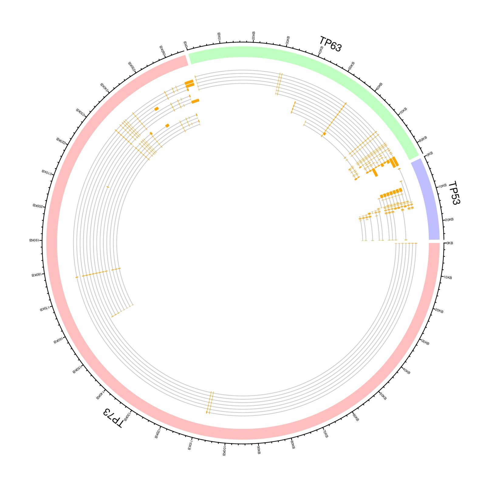

library(circlize)
par(mar = c(1, 1, 1 ,1))
load(paste(system.file(package = "circlize"), "/extdata/gencode_TP_gene.RData", sep=""))
df = data.frame( gene = names(gencode),
start = sapply(gencode, function(x) x$start ),
end = sapply(gencode, function(x) x$end ) )
circos.genomicInitialize(df, sector.name = sapply(gencode, function(x) x$name))
n = max(sapply(gencode, function(x) length(x$transcript)))
circos.genomicTrackPlotRegion(ylim = c(0, 1), bg.col = c("#FF000040", "#00FF0040", "#0000FF40"), bg.border = NA, track.height = 0.05)
circos.genomicTrackPlotRegion(ylim = c(0.5, n + 0.5), panel.fun = function(region, value, ...) {
gi = get.cell.meta.data("sector.index")
tr = gencode[[gi]]$transcript
for(i in seq_along(tr)) {
region = data.frame(sapply(tr[[i]]$exon, function(x) x$start),
sapply(tr[[i]]$exon, function(x) x$end))
circos.lines(c(tr[[i]]$start, tr[[i]]$end), c(n-i, n-i), col = "#CCCCCC")
circos.genomicRect(region, ytop = n-i+0.4, ybottom = n-i-0.4, col = "orange", border = NA)
}
}, bg.border = NA, track.height = 0.3)
circos.clear()